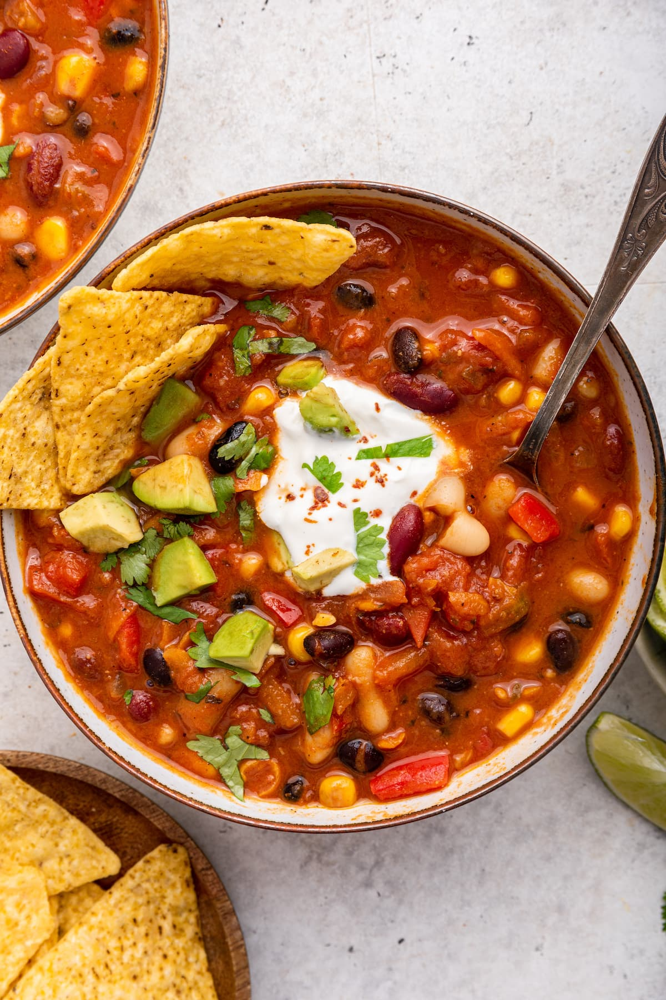

This signature dish of Kiki's Joint in Bushwick, Brooklyn exemplifies hearty, plant-based dining. Infused with bold flavors of house-made chili powder, cumin, and smoked paprika, this recipe is a house favorite and has been on Kiki's menu since she opened the restaurant in 2005.
What You'll Need
Ingredients
Tap each item to check off as you go.
- 2 tablespoons olive oil
- 2 large onions, diced
- 6 cloves garlic, minced
- 2 bell peppers (red or green), diced
- 4 medium carrots, diced
- 4 celery stalks, diced
- 2 medium zucchinis, diced
- 2 × 15 oz cans black beans, drained
- 2 × 15 oz cans kidney beans, drained
- 2 × 15 oz cans pinto beans, drained
- 2 × 28 oz cans diced tomatoes
- 2 cups vegetable broth
- 4 tablespoons tomato paste
- 3 tablespoons chili powder
- 4 teaspoons ground cumin
- 2 teaspoons smoked paprika
- 1 teaspoon ground coriander
- ½ teaspoon cayenne pepper (optional)
- Salt and black pepper, to taste
- 2 bay leaves
- 2 cups frozen corn
- ½ cup fresh cilantro (optional)
- Lime wedges, for serving
How to Make It
Preparation
Prep the Vegetables
Small dice: onions, bell peppers, carrots, celery, and zucchinis. Mince garlic. Drain and rinse all three cans of beans.
Build the Base
Heat olive oil in a large pot over medium heat. Add onions and garlic; sauté 5 minutes until translucent. Add peppers, carrots, and celery; cook 5 more minutes. Stir in zucchini and all spices. Cook 2 minutes until fragrant.
Add Beans & Tomatoes
Add drained beans, diced tomatoes with juice, vegetable broth, and tomato paste. Stir well, add bay leaves, and bring to a low boil.
Simmer
Reduce heat to low. Simmer uncovered 40–45 minutes, stirring occasionally. Add corn in the last 10 minutes. Season with salt and pepper.
Finish & Serve
Remove bay leaves. Adjust seasoning. Garnish with cilantro and lime. Serve with shredded cheese, sour cream, avocado, cornbread, or tortilla chips.
Chef's Tips
For a thicker chili, mash some beans before adding. Serve with cornbread or tortilla chips.
Trending Now
Popular This Week


Have a Question? Ask the Experts!
Submit your cooking question — we might feature it in an upcoming article or video!
Ask a Question